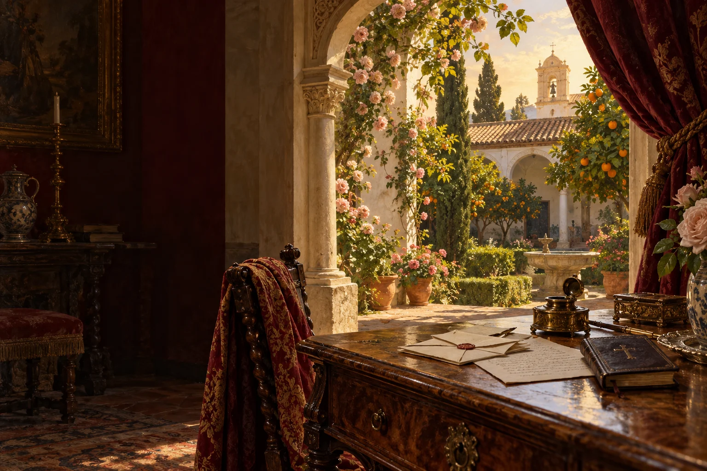

Audiolibros · Tercera Ola
Pepita
Jiménez
Juan Valera · Publicada en 1874
Lo que el corazón no sabe callar.
Una carta intenta explicar el alma.
Un jardín despierta los sentidos.
La certeza empieza a deshacerse.

Entre la confesión y el deseo.
Volumen
Las razones del alma, los rodeos del deseo
Luis de Vargas regresa al pueblo antes de ordenarse sacerdote. Allí conoce a Pepita, una joven viuda a quien corteja su padre. En las cartas a su tío, el deán, intenta sostener la claridad de su vocación; pero la atención que dedica a Pepita deja entrever un sentimiento que todavía no quiere nombrar.
El lector escucha algo más que una confesión: escucha a un hombre tratando de convencerse.
Valera cambia de perspectiva al pasar de las cartas a los Paralipómenos y al epílogo. Lo que una voz explica, otra lo completa o lo pone en duda. Esa arquitectura narrativa vuelve íntimo el conflicto entre amor y vocación, sin reducirlo a una simple oposición entre fe y vida.
Publicada en 1874. Texto y estructura original: Biblioteca Virtual Miguel de Cervantes. La escena superior interpreta los motivos de la correspondencia, la devoción y el jardín; no reproduce una estancia documentada.
La lectura
Cartas de mi sobrino
Paralipómenos
Epílogo · Cartas de mi hermano
Las tres secciones de la novela. Claves de escucha: los destinatarios de las cartas, la ironía y los cambios de perspectiva. Grabaciones pendientes de incorporación.
Reseñas

Excelente